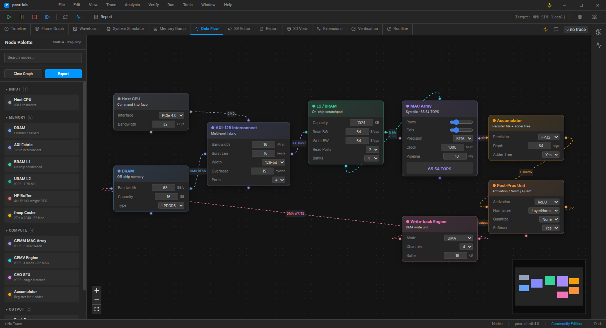

Node Editor¶
The Data Flow tab hosts a Blender-inspired block-diagram canvas where pccx-v002 topology nodes can be dragged, wired, and tweaked interactively.
{kind=link}

Layout¶
Area |
Role |
|---|---|
Left palette |
Categorised, collapsible, searchable node library (Input / Memory / Compute / Output) |
Canvas |
Infinite pan/zoom, minimap overlay, zoom controls |
Quick-add |
|
Node catalogue¶
Thirteen node types ship in the default build; five are pccx-v002 specific and mirror the actual KV260 accelerator topology.
Input¶
Host CPU — AXI-Lite master, configurable PCIe / CXL interface.
Memory¶
DRAM — off-chip: LPDDR5 / HBM2E / DDR5 / GDDR6X with tunable BW + capacity
AXI Fabric — 128-bit interconnect with burst length, overhead, and port count
BRAM L1 — on-chip scratchpad, per-port BW and bank count
URAM L2 (v002) — 64 URAMs, 1.75 MB, 2-cycle read
HP Buffer (v002) — 4-port HP AXI pre-fetch FIFO, separate upper / lower weight channels
fmap Cache (v002) — 27 b × 2048 entries, 32-lane broadcast
Compute¶
GEMM MAC Array (v002) — 32 × 32 W4A8 systolic, 65.5 TOPS at 1 GHz
GEMV Engine (v002) — 4 lanes × 32 MAC, 5-stage pipeline
CVO SFU (v002) — single instance, CORDIC + LUT for exp / sqrt / GELU / sin / cos / softmax
Accumulator — register file + adder tree
Output¶
Post-Proc — activation / normaliser / quantiser / softmax toggle
Write-back DMA — 1 / 2 / 4 / 8-channel egress
Keyboard shortcuts¶
Shortcut |
Action |
|---|---|
|
Open quick-add menu at cursor |
|
Close quick-add menu |
|
Remove selected node(s) / edge(s) |
Scroll |
Zoom in / out |
Drag canvas |
Pan |
Drag palette entry |
Spawn at drop position |
Double-click entry |
Spawn at canvas centre |
Ctrl-Scroll / pinch-zoom also work. The palette collapse state is per-category, not per-session — refresh keeps it expanded.
Typed sockets (colour legend)¶
Each node exposes one or more coloured handles:
Colour |
Data type |
|---|---|
|
command / control |
|
AXI read / stream |
|
AXI fabric / interconnect |
|
fmap / broadcast channel |
|
tile A / primary compute stream |
|
tile B / MAC partial sum |
|
accumulator / stall |
|
post-proc output |
|
DMA egress / write-back |
|
SFU / non-linear |
|
HP buffer input |
|
URAM read / L2 |
|
fmap cache broadcast |
The default wiring mirrors the pccx v002 dataflow (Host → AXI → BRAM → MAC → Accumulator → Post-Proc → Write-back), so the canvas is already a valid starting point for experimentation.
Roadmap¶
Frame / group (nested sub-graphs, Blender style).
Typed socket validation — reject mismatched drops with a visible tooltip.
SVG / PNG export of the current canvas.
Animated data-flow playback synced to the loaded
.pccx.